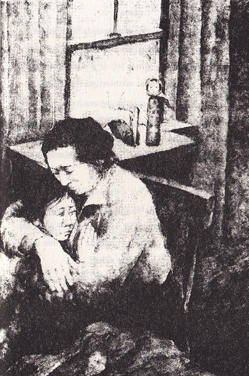

Haziran, bitip tükenmeyen, günlerce süren yağmurlu günleri de beraberinde getirmişti. Gri bulutlar gökyüzünü kaplarken, yağmur da akçaağacın yapraklarından damla damla akıyordu. Çok geçmeden odadaki her şey küf kokmaya başladı, hatta çarşaflar bile nemlenmişti.
Sadako’nun rengi giderek soluyordu. Halsizdi ve neşesinden eser kalmamıştı. Sadece anne-babasının ve Masahiro’nun onu ziyaret etmesine izin verilmişti. Bambu sınıfındaki arkadaşları, Sadako’nun moralini düzeltmek için, ona Kokeşi bebeği gönderdiler. Tahta bebeğin gülümsemesi ve kırmızı kimonosu, Sadako’nun hoşuna gitmişti. Bebeği yatağının yanındaki masaya, altın rengindeki turnanın yanına koydu.
Bayan Sasaki endişeliydi; Sadako yeterince yemek yemiyordu, iştahı yoktu. Bir gece ona sevdiği yiyecekleri getirerek sürpriz yaptı. Pakette yumurta, tavuk, pilav, erik turşusu ve fasulyeli kek vardı. Sadako yastıkları destek yaparak annesinin getirdiği yemekleri yemeye çalıştı, ama boşuna... Şişmiş diş etleri o kadar çok acıyordu ki hiçbir şeyi çiğneyemiyordu. Sonunda o güzel, lezzetli yiyecekleri bir tarafa bıraktı. Bunu gören Bayan Sasaki’nin gözleri doldu.
“İşte böyle bir kaplumbağayım ben!” diye patladı Sadako. Annesini üzdüğü için kendine kızıyordu. Sasaki ailesinin bu pahalı yiyecekleri alacak parası yoktu aslında. Bunu bilen Sadako’nun gözleri yaşardı ve annesi görmesin diye hemen gözyaşlarını sildi.

Bayan Sasaki, yumuşak bir sesle “Önemli değil, üzülme,” dedi. Sadako’ya sarılıp “Çok yakında iyileşeceksin, belki de güneş tekrar gökyüzünde görününce...” diyerek kızını sakinleştirmeye çalıştı.
Sadako annesine sokuldu ve onun okuduğu şiirleri dinledi. Masahiro geldiğinde Sadako sakinleşmişti ve daha mutlu görünüyordu. Masahiro ona okuldan haberler verdi ve annesinin getirmiş olduğu yiyeceklerden o da biraz yedi.
Gitmeden önce, “Az daha unutuyordum,” dedi Masahiro. “Eiji sana bir hediye gönderdi.” Cebinden buruşmuş, altın rengi bir kâğıt çıkardı. Kâğıdı kız kardeşine verirken, “Eiji bunun da başka bir turna için olduğunu söyledi,” diye ekledi.
Sadako kâğıdı koklayarak “Mımmm! Şeker gibi kokuyor,” dedi. “Tanrıların da çikolata sevdiğini umarım.”
Üçü de gülmeye başladı. Sadako, günlerdir ilk defa gülüyordu. Bu iyiye işaretti. Belki de altın renkli turnanın sihri, kendisini göstermeye başlamıştı. Sadako kâğıdı düzeltti ve bundan hemen bir kuş yaptı.
Beş yüz kırk bir....
Fakat yorgun olduğu için kuşu tamamlayamadı. Yatağa uzanıp, gözlerini kapattı. Bayan Sasaki parmaklarının ucuna basarak odadan çıkarken, Sadako, annesinin ona küçükken söylediği şiiri fısıltıyla tekrarladı:
“Cennetin turna sürüsü,
Kanatlarınla çocuğumu ört”